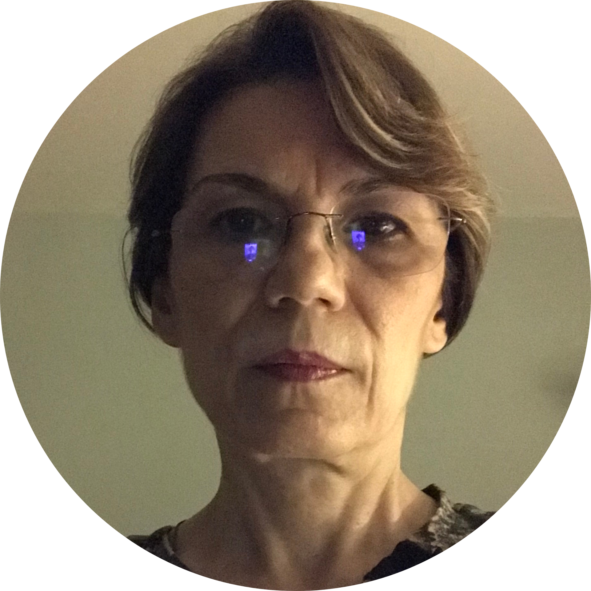
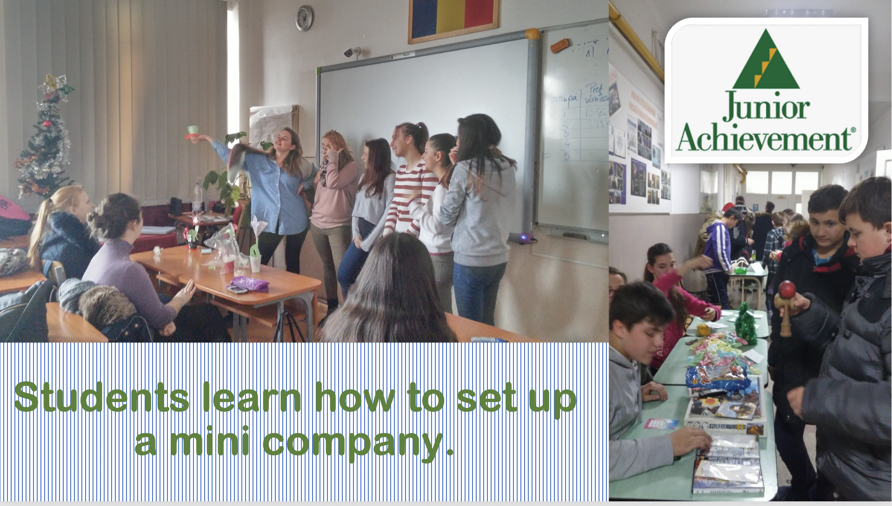
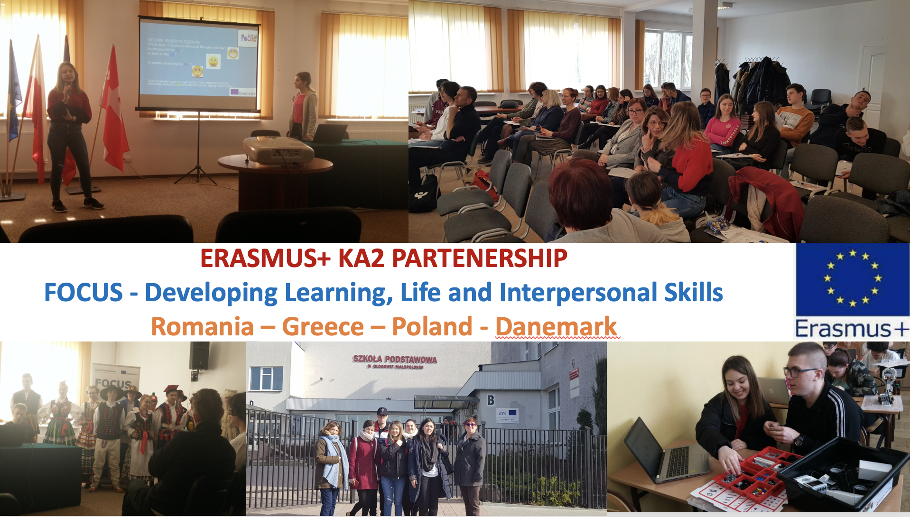

|  |
Simona Cristina Wachob
High-school teacher
I am a high-school teacher, specialized in Philosophy and also in Computer Science. I like to travel and to discover new things and new perspectives. I have never ceased to be amazed about the wonders of the world. |
|  | |
|
 |
| Dates | Work |
|---|---|
| 2014-2020 | Colegiul Tehnic „Ana Aslan” ➡︎ HIGH-SCHOOL |
| 2013-2014 | Colegiul Național „George Barițiu” ➡︎ HIGH-SCHOOL |
| 2012-2013 | Liceul de Arte Vizuale „Romulus Ladea” ➡︎ HIGH-SCHOOL |
| 2011-2012 | Colegiul Tehnic de Transporturi „Transilvania” (+ Liceul de Arte „R. Ladea”) ➡︎ HIGH-SCHOOL |
| 2010-2011 | Liceul Teoretic „Eugen Pora” (+ Gr. Sc. „Tehnofrig” + Gr. Sc. „A. Vlaicu”) ➡︎ HIGH-SCHOOL |
| 2008-2009 | Grup Scolar „Terapia” (now Colegiul Tehnic „Ana Aslan”) ➡︎ HIGH-SCHOOL |
| 2007-2008 | Liceul de Coregrafie și Artă Dramatică „O. Stroia” (+ Gr.Sc.Agricol „Alex.Borza”) ➡︎ HIGH-SCHOOL |
| 2006-2007 | DocEssensis SRL ➡︎ IT-COMPANY |
| 2005-2006 | EBS Consulting SRL ➡︎ IT-COMPANY |
| 2003-2004 | Colegiul Pedagogic „Gh. Lazăr” ➡︎ HIGH-SCHOOL |
| 1996-2003 | Casa de Editură și Publicitate EGO-SFERA SRL ➡︎ PUBLISHING HOUSE |
| 1992-1995 | Casa de editură DELTA-PRESS SRL ➡︎ PUBLISHING HOUSE |
| 1983-1992 | Centrul de Calcul Electronic ➡︎ IT-COMPANY |
|